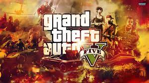

GRAND THEFT AUTO

Who on Earth doesn't know Grand Theft Auto? Although the most famous versions are the latest ones: GTA San Andreas and GTA IV, the story of this successful game started several years ago, exactly in 1997, when Rockstar released GTA, a groundbreaking non-linear urban crime game that shook up a complacent game industry with its irreverent gameplay, humor and style- and the phenomenon was born. You'll experience all the excitement of robbing cars and motorbikes, and complete missions sent to you by the crime bosses. All in a 2D top-down view.The local crime bosses send you out on missions ranging from carjacking to kidnapping and drug running. The more missions you complete successfully, the longer you'll either retain or advance your criminal status, because your goal is to become one of those bosses. Grand Theft Auto V is a 2013 action-adventure game developed by Rockstar North and published by Rockstar Games. It is the seventh main entry in the Grand Theft Auto series, following 2008's Grand Theft Auto IV, and the fifteenth instalment overall. Set within the fictional state of San Andreas, based on Southern California, the single-player story follows three protagonists—retired bank robber Michael De Santa, street gangster Franklin Clinton, and drug dealer and gunrunner Trevor Philips—and their attempts to commit heists while under pressure from a corrupt government agency and powerful criminals. The open world design lets players freely roam San Andreas' open countryside and the fictional city of Los Santos, based on Los Angeles. Grand Theft Auto V is an action-adventure game played from either a third-person or first-person perspective. Players complete missions—linear scenarios with set objectives—to progress through the story. Outside of the missions, players may freely roam the open world. Composed of the San Andreas open countryside area, including the fictional Blaine County, and the fictional city of Los Santos, the world is much larger in area than earlier entries in the series. It may be fully explored after the game's beginning without restriction, although story progress unlocks more gameplay content. Players use melee attacks, firearms and explosives to fight enemies, and may run, jump, swim or use vehicles to navigate the world. To accommodate the map's size, the game introduces vehicle types absent in its predecessor Grand Theft Auto IV, such as fixed-wing aircraft. In combat, auto-aim and a cover system may be used as assistance against enemies. Should players take damage, their health meter will gradually regenerate to its halfway point. Players respawn at hospitals when their health depletes. If players commit crimes, law enforcement agencies may respond as indicated by a "wanted" meter in the head-up display (HUD). Stars displayed on the meter indicate the current wanted level (for example, at the maximum five-star level, police helicopters and SWAT teams swarm to lethally dispatch players). Law enforcement officers will search for players who leave the wanted vicinity. The meter enters a cool-down mode and eventually recedes when players are hidden from the officers' line of sight that displays on the mini-map for a period of time.
Download link:- https://store.steampowered.com/agecheck/app/271590/
Home
previous page
Next page